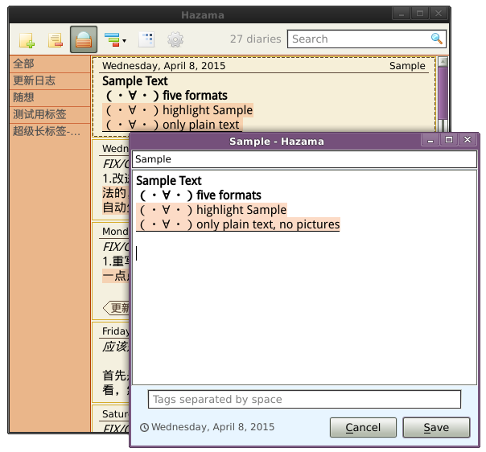
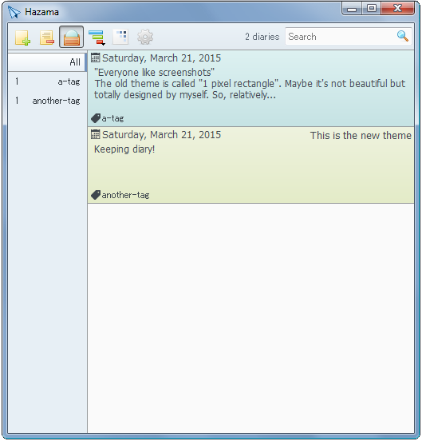

Hazama is a simple and highly customizable application for keeping diary. There is no calendar but a big list that contains preview of diaries.
If you have been journaling using note-taking software, this is for you!
Fetures
- Rich text support
- Tagging
- Export to plain text
- Theming
- Diary graph (Heat map)
Screenshots
Main window
Another theme
